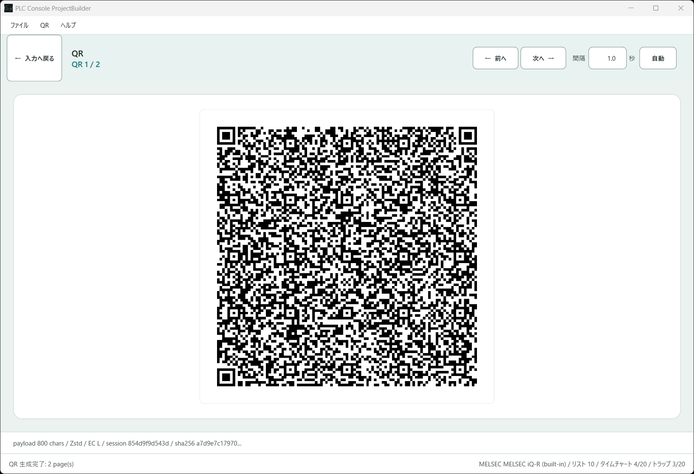

QR Export
ProjectBuilder QR 生成
ProjectBuilder で作成したプロジェクトを QR または JSON として出力します。
QR 表示
QR 生成 を押すと、モバイルアプリで読み込む QR 画面に切り替わります。複数枚ある場合は、表示中のページ番号を確認しながら読み込みます。

入口
- QR 生成 ボタンで QR 表示へ切り替えます。
- 入力へ戻る で編集画面へ戻ります。
- 前へ / 次へ で複数ページ QR を切り替えます。
- 自動 で複数ページ QR の自動切換えを開始し、停止 で止めます。
- ファイル メニューから JSON 読み込み、JSON 保存、JSON 表示 を使えます。
- QR メニューから PNG + JSON 保存 を使えます。
QR 設定
分割サイズ
350、500、800、1200。小さいほどページ数は増えますが読み取りやすくなります。表示サイズ
600、800、1000、1200 px。誤り訂正
L、M、Q、H。強くするほど復元力は上がりますが QR は細かくなります。自動切換え間隔
0.0 から 5.0 秒で指定します。既定値は 1.0 秒です。複数ページ QR の場合だけ使います。モバイルアプリで読む
- QR読込モバイルアプリのメニューから QR読込 を開きます。
- 1枚目ProjectBuilder に表示した 1 枚目を読み込みます。
- 次ページアプリの表示に従って ProjectBuilder 側を次の QR に切り替えます。
- 完了全ページを読み込むとプロジェクトに反映されます。
読み取りにくい場合
画面を明るくし、QR を大きく表示します。改善しない場合は分割サイズを下げて、1 枚あたりの文字数を少なくします。